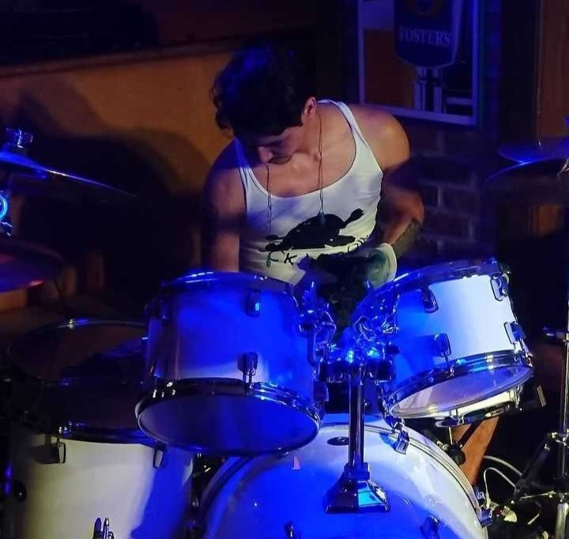
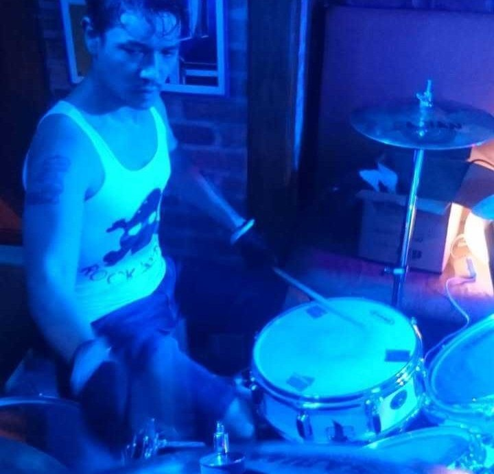

-

-

-
Rocksjärna för en dag
En gång fanns ett rockband vid namn Shifting Tides bestående av fyra passionerade musiker: sångaren Derek, gitarristen Mike, basisten Erik och trummisen Nelson. De älskade att spela tillsammans och hade en unik kemi som trollband publiken. En dag anmälde de sig till en stor musiktävling i Uppsala. Efter veckor av intensiv träning stod de på scenen och gav sitt livs bästa framträdande. Publiken jublade, och juryn gav dem högsta poäng. De vann tävlingen och firade hela natten. Men snart uppstod problem. Derek, sångaren, började kräva en större andel av prispengarna och beslut om bandets framtid. Han ansåg sig vara bandets stjärna och prioriterade sitt eget ego framför gruppens samarbete. Konflikten eskalerade, och bandmedlemmarna kände sig förrådda. Till slut gick de skilda vägar. Nelson, som älskade bandet mest, spelade vidare på egen hand och drömde om att en dag starta något nytt.